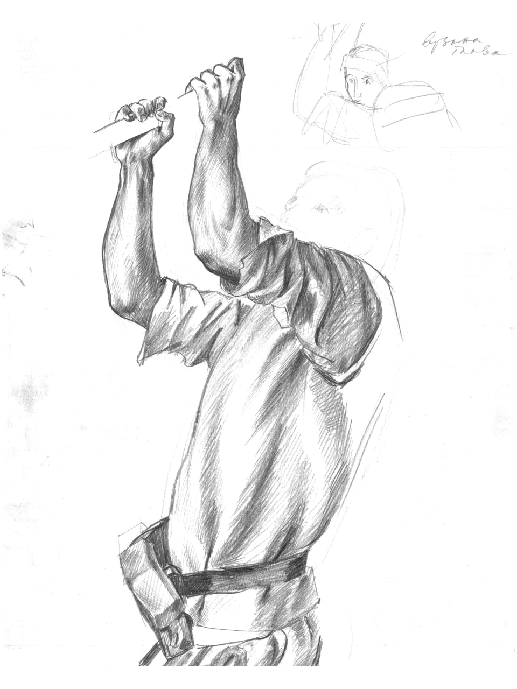
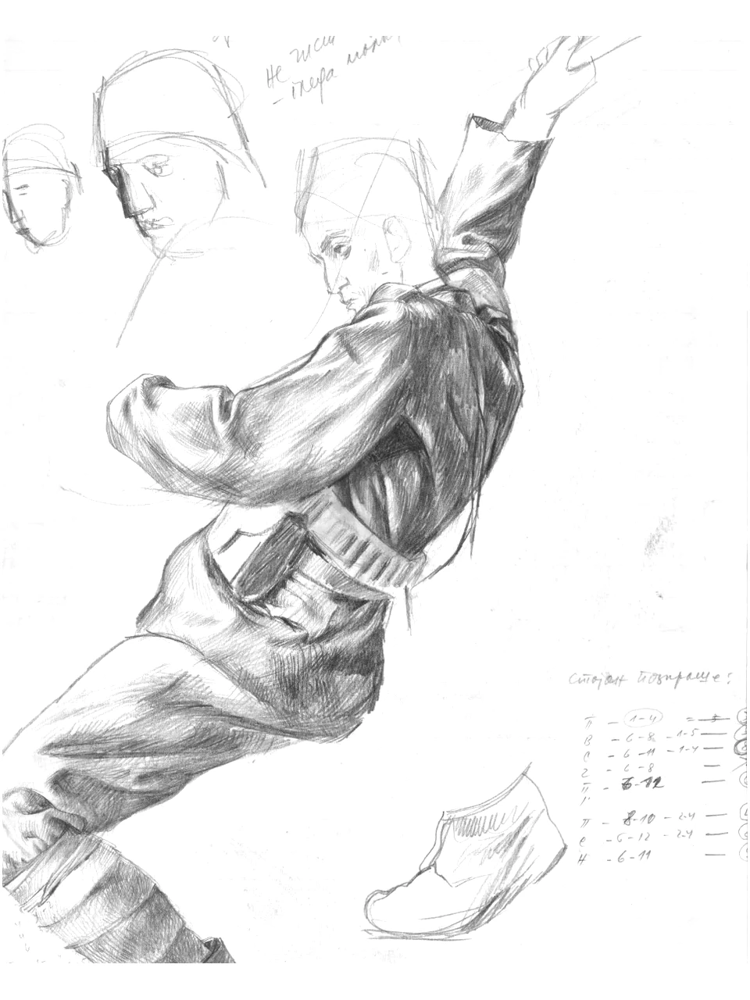
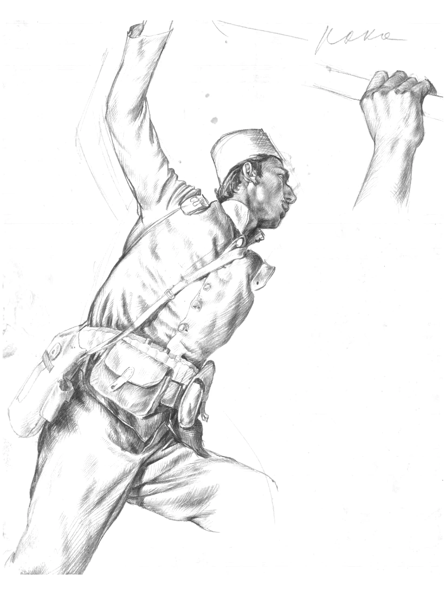
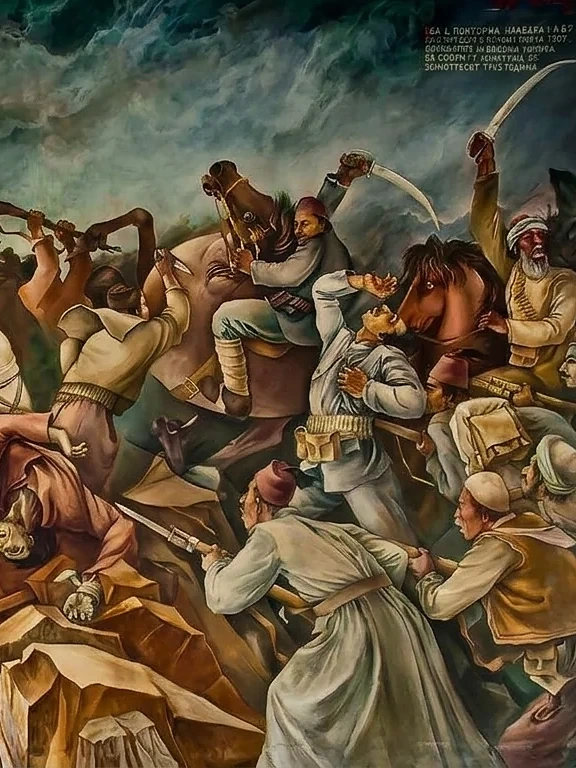

The station wall
In the photograph of the old Skopje railway station, the people on the concourse are small enough to count in a glance. The painted figures above them take longer. Borko Lazeski’s fresco ran nearly the length of the hall, high above the doors to the platforms. A traveler waiting beneath it could see one stretch at a time. To see the whole thing, they had to walk.
Lazeski began the commission in 1951. In her 1979 monograph, Sonja Abadžieva Dimitrova describes an early design closer to realism and years of drawings that gradually broke its figures into harder planes. Painting into wet plaster took another six months with assistants. When The National Liberation War was unveiled in 1956, the wall carried seven episodes of occupation, resistance, and liberation. Lazeski had joined the Partisans during the war. Some of the events he painted came from firsthand experience.
The later version in Prilep gives a clearer view of what those drawings were working toward. Red horses and blue-green bodies press into each other until their outlines are hard to separate. A bent leg carries the eye into the flank of a horse. A blade of green cuts into an area of red. A scene that large could be read from across the hall because Lazeski gave its most crowded passages a few strong directions.

A room people already used
Lazeski was born in Prilep in 1917. He studied in Belgrade and completed his training in Sofia in 1943. After the war, he went to Paris, where he studied fresco, mosaic, and stained glass and took classes with the Cubist painter André Lhote. Back in Skopje, he became the first manager and organizer of what is now the National Gallery of Macedonia, alongside a founding generation that included Nikola Martinoski and Lazar Ličenoski.
Before the railway commission, Lazeski painted Ilinden 1903 for the Army Hall in Skopje. The studies below let you see him working out the poses one at a time. Raised arms, a turning torso, and the bend of a leg had to read on their own before they could carry the eye through a crowded wall.
At the station, he was painting for people occupied with departures, bags, and tickets. He spoke of fresco as a medium that belonged to everyone around it. The choice of a concourse made that idea practical. A person could encounter a large modernist painting on an ordinary journey through town.
The 1963 earthquake destroyed the original fresco. Decades later, Lazeski and his assistants returned to the composition at the Marko Cepenkov Cultural Center in Prilep. The new building gave them two lobbies, so the long sequence had to be divided. The Prilep version was unveiled in 1993, after his death. Its arrangement records a second encounter between the painting and a building, with a different walk from one scene to the next.




Color after the wall
Inside Makedonium in Kruševo, the color travels farther. Lazeski made stained glass for the monument, which opened in 1974. The windows are sunk into the ends of projecting concrete forms. From inside, you see the glass at the far end of a deep opening and then see its greens, blues, and yellows again on the concrete around you.
Architecture kept providing him with different surfaces and different audiences. He taught at the academy of fine arts in Baghdad and later made murals in Mexico City, including a work on the Non-Aligned Movement in 1983. In Kruševo in July 2026, conservators examined Lazeski’s glass and its metal supports as part of preparations for its protection and restoration.
In the station photograph, the architecture determines how much of the fresco a person can see at once. In Kruševo, it determines where the color falls as the light changes. Both works ask for something a reproduction can only suggest. You have to move through the room to see what the artist did with it.
Sources
Sonja Abadžieva Dimitrova. Borko Lazeski, 1979. Monograph, including the station commission, preparatory drawings, and fresco technique.
National Gallery of Macedonia. Institutional history. Lazeski’s role in establishing the gallery.
Ibrahimi Collection. Borko Lazeski chronology. Training, wartime activity, and exhibition history.
Spomenik Database. Skopje’s railway station mural. Archival photographs, the 1963 earthquake, and the Prilep version. The railway station photograph records Lazeski’s The National Liberation War, completed in 1956.
Which Side Are You On? Exhibition booklet. Teaching in Baghdad and mural commissions in Mexico City.
National Conservation Centre. Inspection of Lazeski’s stained glass at Makedonium, July 2026.